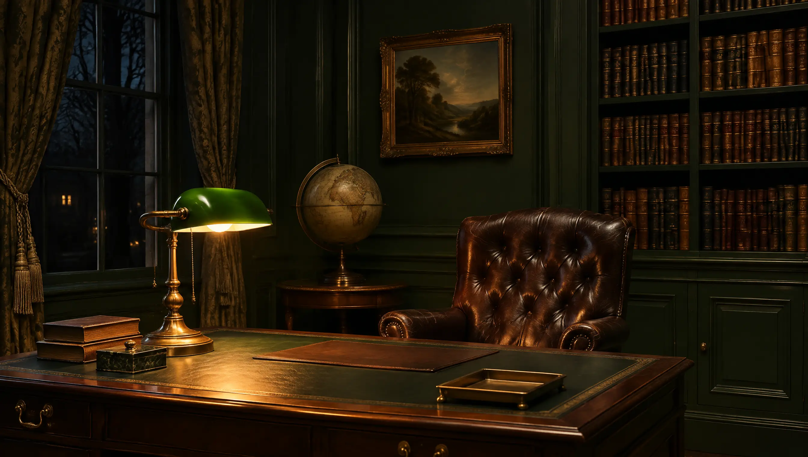

NCAGE 2156 H
Natowski Kod Podmiotu Gospodarki Narodowej
Government Relations · Project Management for Strategic Projects
Ostrowski Arms, firma założona w 1992 roku, prowadzi projekty strategiczne i reprezentuje firmy polskie oraz zagraniczne — w sektorach cywilnych i militarnych, w Polsce i za granicą.

i.O firmie
Koncesja na obrót specjalny pozwala spółce prowadzić działalność i zarządzać projektami z realizacją kontraktów zarówno w sektorach w pełni cywilnych, jak i w sektorze militarnym. Otwiera to szeroki zakres wymiany handlowej w Polsce i za granicą.

ii.Zakres działalności
Ostrowski Arms reprezentuje firmy polskie i zagraniczne oraz prowadzi projekty wobec instytucji państwa — w sektorach cywilnych i militarnych.
Zarządzanie projektami i reprezentowanie firm w Polsce i za granicą, w sektorach ekonomicznych cywilnych i militarnych.

Otwieranie procedur i koordynacja projektów oraz ofert dla Sił Zbrojnych RP, opracowanie i organizacja prezentacji firm, reprezentowanie firm i zarządzanie projektami wobec MON.

Realizacja kontraktów handlowych: uzbrojenie dla wojska, broń, amunicja, materiały wybuchowe, technologie podwójnego zastosowania oraz wyposażenie specjalne dla wojska i policji.

Przy dużych kontraktach, które prawo danego państwa każe zawierać bezpośrednio między podmiotem rządowym a producentem, Andrzej Ostrowski jest zapraszany i zatrudniany jako project manager wewnątrz struktury koncernu — doradza i koordynuje działania handlowe oraz realizację kontraktu, bez nazwy firmy Ostrowski Arms.

Aranżowanie i koordynacja rozmów, w których strony w złożonych obszarach szukają akceptowalnych rozwiązań.
Filozofia Złotego mostu →
Szkolenia strzeleckie prowadzi Andrzej Ostrowski — instruktor strzelectwa z licencją PZSS.

Neutralny status firmy
Prezes Andrzej Ostrowski, zwolennik filozofii Złotego mostu, jest zapraszany jako neutralny mediator i zarazem project manager z doświadczeniem biznesowo-handlowym. Aranżuje i koordynuje rozmowy, w których skonfliktowane strony w skomplikowanych obszarach szukają pozytywnych mediacji i akceptowalnych rozwiązań — łącznie z koordynacją wymiany handlowej, bezpośrednio lub przez stronę trzecią.


iii.Zarząd
Prezes Zarządu Ostrowski Arms Sp. z o.o.
Ekspert Government Relations & Project Management for Strategic Projects oraz obrotu specjalnego — uzbrojenia dla armii, technologii podwójnego zastosowania i wyposażenia specjalnego dla wojska.
iv.Referencje
Andrzej Ostrowski osobiście opracował i z sukcesem zrealizował projekt „Government Relations & Project Management for Strategic Projects” na rzecz zawarcia kontraktu z Departamentem Stanu USA na zakup samolotów wojskowych F-16 — największego kontraktu zbrojeniowego zawartego przez Rząd Polski i Rząd USA.
Projekt zawiera osobistą przedmowę ówczesnego Prezydenta RP Aleksandra Kwaśniewskiego, w dacie zawarcia kontraktu, oraz wystąpienie m.in. kolejnego Prezydenta RP Bronisława Komorowskiego, sprawującego m.in. urząd Ministra Obrony Narodowej i Przewodniczącego Sejmowej Komisji Obrony Narodowej.
Koordynowane przez Andrzeja Ostrowskiego wypowiedzi liderów głównych partii politycznych — koalicji rządowej i opozycji parlamentarnej — wykazały jedność ponad podziałami na rzecz obronności Polski i pełne poparcie dla zawarcia kontraktu.
v.Koncesje
Natowski Kod Podmiotu Gospodarki Narodowej
Obrót specjalny w pełnym zakresie: uzbrojenie, broń, amunicja, materiały wybuchowe, technologie podwójnego zastosowania, wyposażenie specjalne dla wojska i policji
Ochrona osób i mienia — w formie bezpośredniej ochrony fizycznej oraz zabezpieczenia technicznego
vi.Studio
Ostrowski Arms może poprowadzić producenta sprzętu obronnego do prezentacji najwyższej klasy — nagranej w studiu wirtualnej produkcji naszego partnera, Veles Productions w Warszawie.
Wirtualna produkcja to prosty pomysł. Scenografię buduje się w komputerze i wyświetla na ścianie LED za prezenterem. Kamera widzi człowieka w miejscu, którego nie ma — w hangarze, na poligonie, w pawilonie wystawowym. Obok niego stoi trójwymiarowy model produktu.


Wizualizacja koncepcyjna — docelowo nagranie wideo z naszego studiaPrzesuń suwak, aby zobaczyć prawdziwe studio
Premiera systemu w scenografii dopasowanej do historii — od hali montażowej po miejsce, w którym produkt ma pracować.
Model 3D obok prezentera: obrót, przybliżenie, widok rozłożony na części, symulacja działania.
Jeden dzień w studiu i scenografia z siedziby koncernu. Prezes nie musi wyjeżdżać na tydzień.
Produkt w dedykowanym studiu, z rozszerzoną rzeczywistością (AR) — grafiką dodaną do prawdziwego obrazu.

Wizualizacja koncepcyjna — docelowo nagranie wideo z naszego studia
Delegacja ogląda produkt w zamkniętym studiu. Model rozkłada się na części w powietrzu, a ekran pokazuje obraz złożony na żywo. Bez transportu sprzętu i bez ryzyka pogody.
vii.Kontakt
Prosimy o kontakt telefoniczny, przez WhatsApp lub pocztą elektroniczną.
